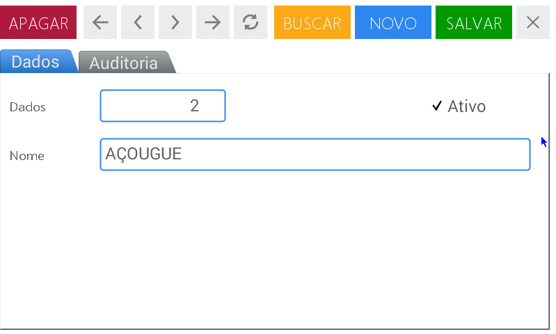

Cadastro de Produtos (PLUs)
Permite criar, modificar ou eliminar produtos (PLUs) do equipamento, configurar os parâmetros vinculados aos mesmos e associar teclas de acesso direto aos produtos mais utilizados.
A imagem seguinte, representa o início de cada subseção, a qual será preenchida com os dados correspondentes. Servirá para selecionar um produto pré-cadastrado, ou para criar um novo.

Produtos (PLU’s)
Nesta opção é possível configurar e/ou modificar a informação associada a cada produto(PLU) e associar as teclas de acesso direto aos produtos de uso frequente. Este módulo está separado em 6 categorias:
- Dados
- Preços
- Avançado
- Cód. barras
- Datas
- Auditoria
Detalharemos primeiramente as funções correspondentes a cada aba e as descrições dos campos:
- Dados: informações básicas dos produtos (PLUs)
- Código: Código numérico do produto (Existem 3 formas de codificação)
- Código PLU: gerado pelo usuário na balança
- ERP: Código interno de uso próprio de cada empresa
- Nome: denominação do produto
- Descrição: texto breve que permite identificar o produto através de alguma particularidade
- Tipo de venda: forma que se comercializa o produto: por unidade ou por peso
- Setor: setor ao qual pertence o produto
- Grupo: conjunto de produtos agrupados dentro de alguma condição
- Modificação de preços: permite cancelar ou habilitar de maneira temporária a correção do valor de um produto
- Publicidade: mensagem promocional visualizada pelo cliente
- Lote: permite agregar um número de lote a um produto
- Tara: permite descontar o peso da embalagem para obtenção do peso líquido
- Preços: permite definir o valor de venda de um produto.
- Avançado: permite complementar as informações relacionadas com as características próprias de um produto, sua rastreabilidade e distribuição. é possível estabelecer também os formatos de impressão.
- Ingredientes: Lista de ingredientes que compõe um produto (receitas)
- Dados de conservação: Informações referentes à conservação do produto (Ex. temperatura, umidade, armazenamento, etc)
- Tabela nutricional: permite visualizar e selecionar as tabelas nutricionais já criadas
- Dados tabela nutricional: permite criar a tabela nutricional do produto
- Informações adicionais: informações adicionais genéricas do produto
- Imagem para impressão: permite associar uma imagem ao produto que poderá ser visualizada na impressão
- Formatos de impressão: permite selecionar os formatos de impressão
- a. Venda direta: formato de impressão que se emite durante uma venda de um produto ao público
- b. Pre-empacotamento: este modo permite etiquetar várias vezes o mesmo produto de maneira sucessiva ou
- etiquetar produtos que são pesados fora da presença do consumidor
- Rastreabilidade de carnes: permite registrar as informações referentes ao histórico animal, desde o início até o final da cadeia de comercialização
- Dados de fornecedores: permite inserir informações relevantes aos fornecedores
- Código de barras: permite selecionar a impressão de um ou mais códigos de barras de acordo com a aplicação.
- Datas: permite estabelecer data e hora de vencimento de um produto de maneira manual (no momento da geração de uma venda). Esta informação é visualizada na impressão da etiqueta.
- Auditoria: são visualizados as informações relacionadas aos registros dos dados armazenados.
Como cadastrar um produto.
A seguir, descreveremos os passos para o cadastramento de produtos.
Acesse o menu pressionando a tecla
Insira o usuário e digite a senha.
Pressione Aceitar
Escolha a opção Cadastro de produtos localizada na parte superior direita da tela
Neste momento é visualizado as opções completas dos cadastros. Pressione Produtos (PLU’s)
Para iniciar a criação do Produto pressione Novo na barra de navegação superior da tela

São visualizados todas as abas das configurações referentes ao novo produto. acesse a aba Dados.
Insira o código do novo produto no campo Código através do teclado numérico
No segundo campo Código ERP é possível colocar a identificação de gestão da sua empresa utilizando o teclado numérico do equipamento ou pressionando a tecla para visualizar o teclado alfanumérico.
Na parte esquerda de cada campo descrito é visualizado um campo de busca.
Pressione sobre ele para ativar o menu de busca
Selecione a imagem correspondente ao novo produto, deslizando a barra lateral direita ou através de uma palavra chave.
Pressione Selecionar para escolher a imagem
No campo Nome pode ser inserido no término da identificação do produto. Pressione dentro do campo para habilitar a edição, a seguir a tecla para visualizar o teclado alfanumérico. insira o nome desejado e pressione aceitar
Utilize os mesmos procedimentos para o campo de Descrição
No campo Tipo de Venda Selecione a opção desejada na caixa de seleção. As opções são:
- Produtos vendidos por peso
- Produtos vendidos por unidade
- Congelados
- Drenados
Clique sobre a opção desejada para selecionar
No campo seguinte denominado Setores e Grupos funcionam da mesma maneira. Pressionando:
- A lupa é acessado o menu de busca
- O símbolo + acessa os setores ou grupos já existentes e
- O símbolo X cancela as ações e retorna
No campo Modificação de preços Utilize a caixa de seleção para selecionar dentre as opções:
- Não permitir alterações: não permite modificar o preço pelo teclado
- Permitir modificação temporária: o operador pode realizar a alteração do valor do produto de forma manual.
No campo Publicidade É possível executar as seguintes ações:
- pressionando a lupa aparecerá o menu de busca
No quadro direito são visualizados os detalhes das publicidades criadas anteriormente ou ampliar a busca através de uma palavra chave - O símbolo + permite acessar as mensagens já existentes para realizar alguma modificação
- O símbolo X fecha o anúncio selecionado e retorna
Para associar um número de lote a um produto pressione o campo correspondente para habilitar-lo. É possível utilizar o teclado numérico do equipamento ou ativar o alfanumérico pressionando a tecla
No campo Tara é possível inserir o peso da embalagem do produto. Esse procedimento pode ser realizado das seguintes formas:
- utilizando as setas na direita do campo ou
- inserindo o valor através do teclado numérico.
Pressione Salvar
Aba Preços
Selecione o campo correspondente do preço para inserir / alterar o valor
Utilize a tecla para apagar o preço
Insira o valor monetário correspondente através do teclado numérico da balança
Pressione Salvar para armazenar o valor
Aba Opções Avançado.
Os campos denominados Ingredientes e Dados de conservação funcionam da mesma maneira. Ao Pressionar:
- A lupa acessa o menu de busca. No quadro direito serão exibidos os detalhes dos ingredientes ou sugestões de conservação já armazenados. Selecione um para associar ao produto e pressione selecionar.
- O símbolo + permite acessar as listas de ingredientes ou dados de conservação já existentes para realizar modificações ou inserir novas informações.
No campo Tabela nutricional é possível associar uma tabela nutricional a um produto já criado. Para isso pressione a lupa e realize os passos descritos anteriormente para realizar uma busca.
O campo Dados Tabela nutricional exibe um editor que permite inserir os valores nutricionais correspondentes.
Insira as informações referentes aos dados nutricionais do produto utilizando o teclado numérico ou habilitando o teclado alfanumérico através da tecla
Os campos de Dados adicionais de uso geral e Dados adicionais de uso geral (2) são para quaisquer informações adicionais referentes ao produto. para inserir pressione a tecla para visualizar o teclado alfanumérico na tela, digite a informação e pressione aceitar
Para utilizar uma Figura Produto pressione sobre o campo para acesso ao menu de busca. No quadro lateral direito serão visualizados as imagens já cadastradas. Escolha a uma imagem a associar ao produto, e pressione selecionar. é possível a busca também por palavra chave.
Nas opções de Formatos de Impressão, são possíveis: Venda direta e Pré-empacotamento. Em ambas as opções se executam da mesma maneira:
- pressionando a lupa é exibido o menu de busca. No quadro direito são visualizados os modos de venda já cadastrados. Escolha o que corresponde ao produto a ser criado e pressione selecionar. é possível ampliar a busca por palavra chave.
- O símbolo X fecha a tela de seleção de formato de impressão.
Os campos Rastreabilidade de Carnes e Dados de fornecedores possuem várias linhas de informação a serem preenchidas.
As ações disponíveis para selecionar ou completar os dados são as mesmas do item anterior:
- A lupa acessa o menu de busca
- O simbolo + permite acessar as informações já existentes para realizar alguma modificação. No caso da opção de Rastreabilidade de Carnes são visualizados os dados do módulo Países; e em Dados de fornecedores é habilitada a tela correspondente a Terceiros
- O simbolo X permite fechar a tela
Ao finalizar pressione Salvar
Aba Cód. barras
Para ativar ou desativar as funções disponíveis neste módulo do menu pressionar sobre os campos em cinza.
Em Substituir PLU pelo número é possível utilizar as setas para inserir o número, ou digitá-lo através do teclado numérico.
Nos campos UPC / Código de barras fixo e Código de barras fixo pressione sobre o campo e:
- insira os números através do teclado numérico ou
- pressione para ativar o teclado alfanumérico
Ao finalizar todas as modificações pressione Salvar
Aba Datas
Para compreender melhor seu funcionamento descrevemos a seguir como exemplo, a data de vencimento de um produto: carne moída.
No primeiro item Base de cálculo pressione a seta no extremo direito do campo para visualizar as opções
Selecione a opção Data de venda + validade
No campo Validade (em dias) coloque a quantidade em dias para consumo: 3 (três) dias. Para isso utilize as setas no extremo do campo até visualizar o número três.
Outra maneira de inserir o valor é pressionar para apagar o número anterior e em seguida colocar o número três através do teclado numérico.
Configuração da data de venda.
Pressione Data e hora. serão visualizadas todas as opções disponíveis:
- Data e hora
- Somente Data
- Somente hora
Selecione a segunda opção clicando sobre ela.
No campo seguinte Base de cálculo realize as alterações da mesma forma que descrita no item anterior e selecione data da venda + Validade
No campo Validade (em dias) Insira a quantidade de dias: 3 (três) seguindo os passos detalhados anteriormente
Em seguida pressione Salvar
Aba Auditoria são exibidas as informações relacionadas aos registros dos dados armazenados.
Listas de Preços
Permite gerar novas tabelas de preços e associar produtos a elas com a possibilidade de estabelecer uma data de vigência. O equipamento possui duas listas de preços pré-estabelecidas de fábrica.
Para acessar o menu pressione a tecla
Selecione o usuário e digite a senha correspondente.
Pressione Aceitar
Escolha a opção Cadastro de produtos na parte superior direita da tela
Na tela é exibido o menu completo deste módulo. Clique em Listas de Preços
Para inserir uma nova lista de preços pressione Novo.
Complete os campos detalhados da lista no campo denominado Dados. Os itens ainda não modificados aparecem em cinza e se ativam na medida em que completam as informações requeridas.
Na tela de Dados encontra-se o campo denominado Nome. Aqui é inserido a denominação da nova lista. Por ex: Ofertas da semana. Para isso insira no campo o texto para ativar e após a tecla para visualizar na tela o teclado alfanumérico.
No campo Descrição é inserido breve texto que explique a aplicação da lista de preços criada. Os procedimentos de preenchimento são os mesmos do passo anterior.
Ao criar a lista de preços sempre aparece marcada a palavra Ativa. Isto habilita a lista para uso. Caso deseje que a nova lista seja visualiza como preferencial de venda, marque a opção Default.
Também é possível utilizar os campos Válido de e Válido até para estabelecer uma data de vigência da lista de preços criada:
- utilizando as setas para selecionar a data desejada ou
- inserindo as datas através do teclado numérico. Para isso deve-se pressionar a tecla de ativação do teclado
Pressione Salvar para confirmar a operação.
É visualizada uma mensagem de confirmação. Pressione Aceitar
Imagens
Nesta opção é possível carregar todas as imagens para visualizá-las na tela. Esta operação é possível em massa através de um dispositivo USB (pen drive).
Acesse o menu pressionando a tecla
Selecione o usuário e digite a senha correspondente.
Pressione Aceitar
Escolha a opção Inserir / excluir localizada da parte superior direita da tela.
Será visualizado o menu completo deste módulo. Pressione Imagens
Para iniciar com a carregamento das imagens pressione Novo
Complete os dados referentes a esta imagem na aba Dados.
Pressione o campo Nome para habilitá-lo, em seguida a tecla para visualizar o teclado alfanumérico e digite a identificação da imagem.
A palavra Ativo aparecerá marcada por default. Selecione a seguir a opções:
-Ícone para acesso
- É logo de RSI
- Imagem do produto
- Imagem de fornecedor, usuário, etc.
Pressione no quadro seguinte (em branco) para carregar ou modificar a imagem.
Será visualizada a seguinte tela
Pressione o botão Buscar em para selecionar a origem do arquivo.
No campo Nome de arquivo coloque a identificação da imagem. Pressione a tecla para habilitar o teclado alfanumérico.
Pressione Abrir
Nesta opção é possível carregar todas as imagens para visualizá-las na tela. Esta operação é possível em massa através de um dispositivo USB (pen drive).
Pressionar o botão de carga masiva exibirá a tela a seguir. Aqui você deve preencher as informações adequadas para o uso que deseja dar às imagens.
Então você precisa selecionar a localização das imagens no pen drive e finalmente salvar.
Mensagens Promocionais
Permite visualizar na parte inferior do visor da balança, uma mensagem promocional referente a empresa, produtos ou ofertas, programados de acordo com a sua necessidade.

Acesse o menu através da tecla
Selecione usuário e digite a senha correspondente.
Pressione Aceitar
Escolha a opção Inserir / Excluir localizada na parte superior direita da tela
Na tela será exibida o menu completo deste módulo. Pressione Mensagem promocional
Para criar uma nova mensagem promocional pressione Novo
Insira as opções detalhadas do item na aba Dados.
Primeiro pressione sobre o campo Nome para habilitar o campo, em seguida a tecla para visualizar o teclado alfanumérico.
Insira o texto referente a mensagem promocional no campo MENSAGEM e siga os mesmos passos anteriormente descritos .
Selecione Ativo se deseja para habilitar a visualização no visor do cliente (não é relacionada com produtos) ou escolha É publicidade para produtos se o anúncio se vincula a um produto em particular.
Pressione Salvar para confirmar a operação.
Na aba Auditoria são visualizadas as informações relacionadas os registro de dados armazenados.
Usuários
Nesta opção são selecionadas as permissões referentes aos usuários com a possibilidade de distintos acessos (venda, consulta, administração)
Acesse o menu pressionando a tecla
Selecione o usuário e digite a senha correspondente.
Pressione Aceitar
Escolha a opção Inserir / excluir localizado na parte superior da tela
Na tela são visualizados o menu completo deste módulo. Pressione Usuários
Para criar um usuário pressione Novo
Aba Dados
Complete as informações referentes aos usuários a serem criados: Nome, sobrenome, descrição, usuário, senha e confirmação.
Todos os campos são preenchidos daa mesma maneira:
- Clique sobre o campo para habilita-lo,
- Após a tecla para visualizar o teclado alfanumérico,
- preencha a informação correspondente e
- pressione Entrar para confirmar
A opção Ativo aparecerá marcada por default.
Caso deseje restringir as permissões de um usuário para que não possa realizar nenhuma operação na balança, selecione Bloqueado.
No campo de Rolagem selecione dentre as opções disponíveis e escolha a função pertinente ao usuário criado:
- Administrador - Consulta - Vendedor
Complete as informações correspondentes ao Email e Telefone seguindo os passos descritos anteriormente.
Pressione Salvar para confirmar a operação.
Na aba Auditoria são visualizados as informações relacionadas aos registros de dados armazenados.
Setores
Permite criar, modificar e/ou apagar os setores que serão associados aos produtos. Ao Criar um setor, é possível a associação em grupos, facilitando listas, relatório de vendas, manutenção e atualização de dados.

Acesse o menu pressionando a tecla
Selecione o usuário e digite a senha correspondente.
Pressione Aceitar.
Escolha a opção Inserir / Excluir localizado na parte superior da tela.
Na tela é visualizado o menu completo deste módulo. Selecione Setores.
Para criar um novo setor, pressione Novo.
Complete o detalhamento das informações na aba Dados.
Campo Código define o código do setor a ser criado.
A opção Ativo é selecionado por default. Caso deseje desabilitar qualquer setor, desmarque esta opção.
Clique sobre o campo Nome para definir o nome do setor.
Também é possível utilizar os setores cadastrados de fábrica. Para isso, pressione Buscar (localizado na parte superior) e selecione dentre as opções:
- Frios e Lácteos
- Açougue
- FLV
- Padaria
- Peixaria
- Armarinhos e Bazar
- Setor Genérico
Pressione Salvar.
Na aba Auditoria são visualizados as informações referentes aos registros de dados armazenados
Grupos
Permite criar, modificar e/ou excluir grupos a qual serão vinculados aos produtos (PLUs)
Acesse o menu pressionando a tecla
Selecione o usuário e digite a senha correspondente.
Pressione Aceitar
Escolha a opção Inserir / Excluir localizada na parte superior da tela
Na tela serão visualizados o menu completo deste módulo. Pressione Grupos
Para incluir um novo Grupo, pressione Novo.
Na aba de Dados esta localizado o primeiro campo denominado Código. Insira o número desejado para o grupo a ser criado.
A opção Ativo aparecerá marcada por default. Caso deseje desabilitar um grupo, desmarque esta opção.
Clique sobre o campo Nome para inserir o nome do grupo.
Para localizar grupos já criados pressione buscar (posicionado na barra superior) e selecione o desejado.
Pressione Salvar.
Na aba Auditoria serão visualizadas as informações relacionadas aos registros dos dados armazenados
Receitas (Ingredientes)
Permite cadastrar a lista de elementos que compõem um produto para serem associados posteriormente a um produto.
Acesse o menu pressionando a tecla
Selecione o usuário e digite a senha correspondente.
Pressione Aceitar
Escolha a opção Inserir / Excluir localizada no canto superior direito da tela
Na tela será visualizado o menu completo deste módulo. Pressione Receita
Para iniciar o cadastro de Ingredientes pressione Novo.
Clique sobre o campo Nome e insira a identificação da receita que será relacionada posteriormente a um produto.
Realize o mesmo procedimento para inserir as informações da Receita. Aqui poderá ser colocado os detalhes completos dos componentes.
A opção Ativo aparecerá marcada por default. Caso deseje desabilitar uma receita desmarque este campo.
Pressione Salvar.
Na aba Auditoria serão visualizados as informações relacionadas aos registros dos dados armazenados.
Dados de conservação
Permite cadastrar uma lista de recomendações de uso/ conservação para os produtos (Ex. temperatura, umidade, armazenamento, etc). Estas informações podem ser inseridas na criação/configuração de um produto (PLU), e posteriormente ser impressas quando associadas.
Acesse o menu pressionando a tecla
Selecione o usuário e digite a senha correspondente.
Pressione Aceitar
Escolha a opção Inserir / Excluir posicionado no canto superior da tela
Na tela será visualizado o menu completo deste módulo. Pressione Dados de conservação
Para iniciar a criação de novos dados de Conservação pressione Novo.
Na tela de Dados clique sobre o campo Nome e insira a identificação do tipo de conservação a criar.
Utilize os mesmos procedimentos para o campo Dados de conservação. Aqui é possível inserir os detalhes completos das indicações de preservação adequada ao produto.
A opção Ativo aparecerá marcada por default. Desmarque esta opção para desabilitá-lo.
Pressione Salvar
Na aba Auditoria serão visualizados as informações relacionadas aos registros dos dados armazenados.
Terceiros
Permite criar um cadastro que contém informações primárias e secundárias das pessoas/empresas que se vinculam de maneira direta ou indireta com o seu negócio.
Acesse o menu pressionando a tecla
Selecione a opção Inserir / Excluir
Pressione a opção Terceiros
Para iniciar com a criação de um novo registro pressione Novo.
No campo de Dados ative o campo Nome e complete os dados correspondentes.
Proceda da mesma maneira para o campo Descrição
A opção Ativo aparecerá marcada por default. Caso deseje desabilitar desmarque esta opção
Dentro das opções disponíveis no campo Tipo selecione a que se associe a profissão da pessoa cadastrada.
Por último, clique em Nº Documento para inserir os dados correspondentes a identificação.
prossiga com o preenchimento na aba Telefones e Endereços.
No campo Nome selecione a opção correspondente ao item inserido.
Caso necessite alterar as informações já existentes pressione Alterar
Modifique os dados necessários clicando sobre o campo correspondente.
Pressione Salvar.
Na aba Auditoria serão visualizadas as informações relacionadas aos registros dos dados guardados
Unidade Monetária
Permite definir o símbolo da unidade monetária (ex. $, R$, USD, etc.), também as casas decimais para os preços. Esta configuração será exibida nas impressões dos comprovantes, etiquetas e relatórios.
Acesse o menu pressionando a tecla
Selecione a opção Inserir / Excluir
Clique na opção Unidade Monetária
Para iniciar um novo registro pressione Novo.
Na tela de Dados clique sobre o campo Símbolo e insira a identificação do tipo de moeda a ser criada.
Utilize o mesmo procedimento para o campo de Descrição
A opção Ativo aparecerá marcada por default. caso deseje desabilitar, desmarque esta opção.
Insira o Cód. ISO clicando sobre ele, e inserindo a informação relacionada a ISO.
No campo casas decimais coloque os decimais correspondentes.
Pressione Salvar.
Para localizar os registros já criados pressione Buscar localizado na barra superior
Na aba Auditoria são as visualizações informações relacionada os registros dos dados armazenados
Países
Permite completar a informação associada ao país de origem do produto.
Acesse o menu pressionando a tecla
Selecione a opção Inserir / Excluir
Clique no campo Países
Para iniciar um novo registro pressione Novo.
Na tela de Dados clique no campo Nome e insira o nome do país a ser criado.
Utilize o mesmo procedimento para o campo Descrição.
A opção Ativo aparecerá marcada por default. Caso deseje desabilitar, desmarque esta opção.
Insira o Cód. ISO, que identifica o código ISO do sistema de gestão.
No campo Unidade monetária é possível selecionar através do menu de busca os valores monetários já criados ou pressionar o botão + para modificar algum dos existentes.
Pressione Salvar.
Para localizar os registros já criados escolha a opção Buscar (localizado na barra superior) Pode-se ampliar a busca através do código ISO ou descrição.
Na aba Auditoria serão visualizados as informações relacionadas aos registros de dados armazenados
Cadastro de Estados
Permite estabelecer a informação que correspondente ao estado proveniente do produto.
Acesse o menu pressionando a tecla
Selecione a opção Inserir / Excluir
Selecione Estados
Para um novo registro pressione Novo.
Na tela de Dados clique no campo Nome e coloque a denominação do estado.
Utilize os mesmos procedimentos para o campo Descrição.
A opção Ativo aparecerá marcada por default. Caso deseje desabilitar alguma Região selecione esta opção.
Clique sobre o campo Abreviatura e insira as siglas que identificam a província a ser criada.
No campo País acesse o menu de busca para localizar os países já cadastrados ou pressione o botão + para modificar algum dos existentes.
Pressione Salvar
Para localizar os registros já criados escolha a opção Buscar (localizado na barra superior) É possível a utilização da busca por nome ou sigla.
Na aba Auditoria serão visualizadas as informações relacionadas aos registros dos dados armazenados
Cadastro de Cidades
Permite cadastrar a cidade de origem de produto.
acesse o menu pressionado a tecla
Selecione a opção Inserir / Excluir
Acesse a opção Cidades
Para iniciar um novo registro pressione Novo.
Na tela de Dados clique no campo Nome e insira o nome da cidade a ser criada.
Utilize os mesmos procedimentos para o campo Cód. área.
A opção Ativo aparece marcada por default. caso deseje desabilitar, desmarque esta opção .
No campo CEP para insira o código de endereçamento postal que identificará a cidade.
Os campos seguintes Estado e País são preenchidos da mesma maneira:
- Acesse o menu de busca para localizar os estados e países já cadastrados ou
- pressione o botão + para modificar algum já existente
Pressione Salvar
Para localizar os registros já criados escolha a opção Buscar (localizado na barra superior) A busca também é possível por abreviação ou nome
Na aba Auditoria serão visualizadas as informações relacionados aos registros de dados armazenados.